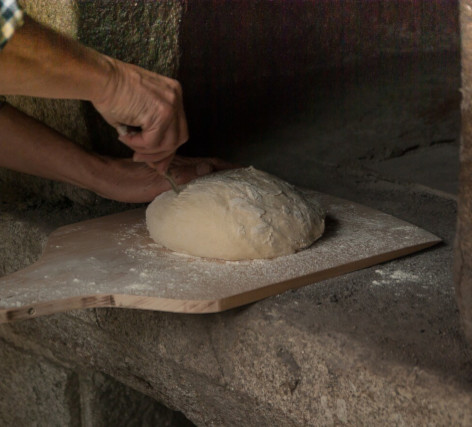

Nous restons ouvert pendant les fêtes (sauf les 25/12 & 01/01)
Très bonnes fêtes à vous toutes et tous
L’ÉpiNature est une boulangerie coopérative spécialisée dans la fabrication de pains Bio au levain naturel et la distribution en circuit-court.
Tout est dit (ou presque) dans notre enseigne. Nous avons pignon sur place (St-Jean) depuis le 18 juillet de l’année 2023 et déjà les connaisseurs et les passionnées nous ont repérés. C’est le goût du vrai et de la tradition qui nous inspire et que l’on souhaite partager avec vous.
Devenons co-pain !

Pour ceux qui veulent nous rencontrer, vous pouvez nous retrouver sur de nombreux marchés du nord-est toulousain ainsi que de la vallée du Tarn. N’oubliez pas aussi nos nombreux points de livraisons dans Toulouse.
Introduction sur le Pain
Les pains au levain naturel se développent en France depuis plusieurs années en lien avec le concept du Bio. Cette panification se distingue de celle de la boulangerie conventionnelle réalisée à partir de levure de boulanger et les produits obtenus sont très différents.
A l’ÉpiNature, nous fabriquons tous les jours trois levains naturels : seigle, blé et riz.
Il s’agit de faire un élevage de bactéries et de levures pendant 12h environ. Pour cela nous mélangeons de la farine, de l’eau et une souche de levain. Les bactéries et les levures vont se reproduire dans cet élément et 12h après, le levain sera prêt pour ensemencer la pâte à pain.
La fermentation qui s’opère est dite lactique puisque les bactéries créent de l’acide lactique (yahourt, fromage) tandis que les levures créent de l’alcool et du CO2 (responsable des alvéoles du pain après cuisson). Plusieurs effets sont observables :
d’abord des arômes et saveurs particulières et prononcés des pains au levain naturel. Cela nous permet de réduire le taux de sel.
Une longue conservation : trois à quatre jours pour les pains de campagne ; certains clients nous disent qu’ils se gardent une semaine…
L’activation d’enzymes contenus naturellement dans la farine comme :
La protéase : son rôle est de couper les protéines, notamment les gliadines et gluténines responsables du réseau de gluten. Nous devons la texture de nos pains ainsi que leur digestibilité au travail de cette enzyme.
La phytase : elle dégrade l’acide phytique se qui rend les minéraux plus facilement assimilables.
Au-delà de cette technicité, c’est avant tout le plaisir de manger du bon qui caractérise les pains au levain naturel fabriqués au à l’ÉpiNature.